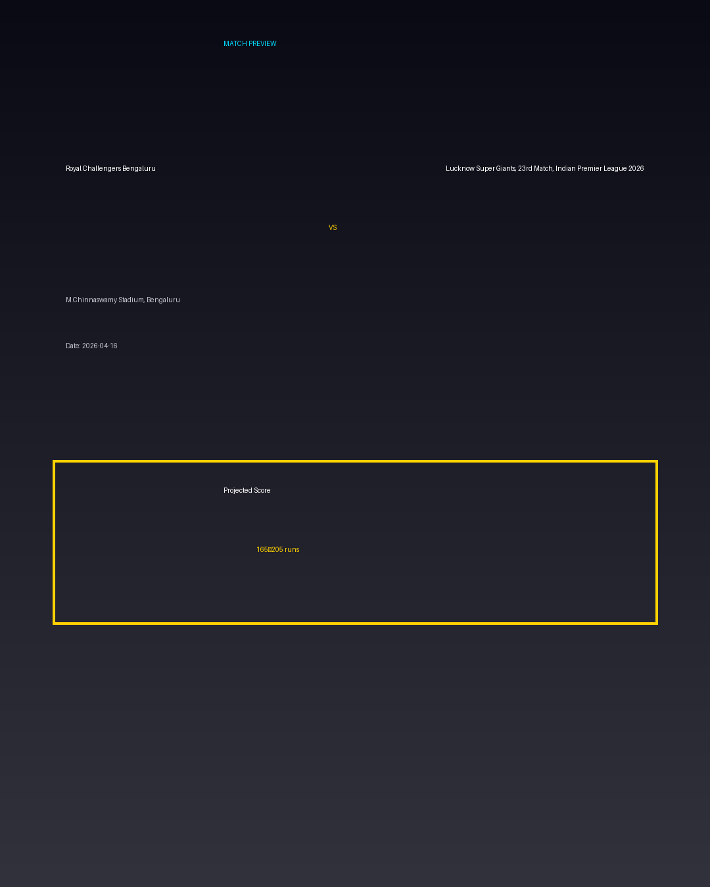

Royal Challengers Bengaluru vs Lucknow Super Giants, 23rd Match, Indian Premier League 2026
Date: 2026-04-16
Venue: M.Chinnaswamy Stadium, Bengaluru


Form Guide
Royal Challengers Bengaluru: 🟩 🟥 🟩 🟩 🟥
Lucknow Super Giants, 23rd Match, Indian Premier League 2026: 🟥 🟩 🟥 🟥 🟩
Pitch Report
Very small boundaries — 200+ possible.
Projected Score
165–205 runs
Key Players
- Royal Challengers Bengaluru Key Batter — Batsman
- Royal Challengers Bengaluru Strike Bowler — Bowler
- Lucknow Super Giants, 23rd Match, Indian Premier League 2026 Key Batter — Batsman
- Lucknow Super Giants, 23rd Match, Indian Premier League 2026 Strike Bowler — Bowler
Advanced Win Probability
Royal Challengers Bengaluru: 65.8%
Lucknow Super Giants, 23rd Match, Indian Premier League 2026: 34.2%
AI Match Prediction
Based on venue conditions, a projected scoring range of 165–205 runs, recent form (with Royal Challengers Bengaluru appearing slightly stronger), and the pitch profile ('Very small boundaries — 200+ possible.'), this matchup appears to present Royal Challengers Bengaluru entering as clear favorites. Early momentum and top-order execution will likely determine the winner.
